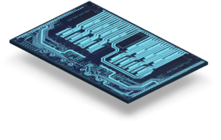

01
Map the tool chain
Map current IT and engineering tools, then mark access, license, and data flows that slow LEAF Light work.
SCINTIL is taking SHIP and LEAF Light from customer evaluation toward production. That shift needs clean systems around tools, data, access, and support across France and North America.
Why we're here: we saw the Head of Information Technology search. It points to multi-site IT, Microsoft 365, security, engineering software, cloud, and user support becoming urgent.

The signal says SCINTIL is putting structure behind a fast scale-up. LEAF Light is moving from deep-tech proof to customer evaluation and volume planning. That likely creates pressure around access, design tools, test data, cloud or colocation choices, and user support. If those systems lag, the new IT leader spends the first months fixing basics instead of helping product and customer teams move faster.
Engagement model: a 6-week dedicated squad under your Head of IT, with weekly demos and a clear handover.
Map current IT and engineering tools, then mark access, license, and data flows that slow LEAF Light work.
Build Microsoft 365, identity, and onboarding patterns for France and North America, with clear admin runbooks.
Create a small data pipeline for test and reliability files, so engineers can find results and share customer evidence.
Set up CI, QA, and release checks for internal tools that support product, packaging, and customer integration work.
Hand over docs, dashboards, and backlog ownership to the Head of IT, with weekly demos and risk review.

Elinext built software for a large telecom provider to monitor physical and virtual network components in real time.
The system helps teams maintain complex infrastructure and respond to changing operational needs.
View case study
Elinext rebuilt delivery pipelines for a global infrastructure solutions company with regular test and release needs.
The work cut development time by 40% and kept quality and security controls in place.
View case study